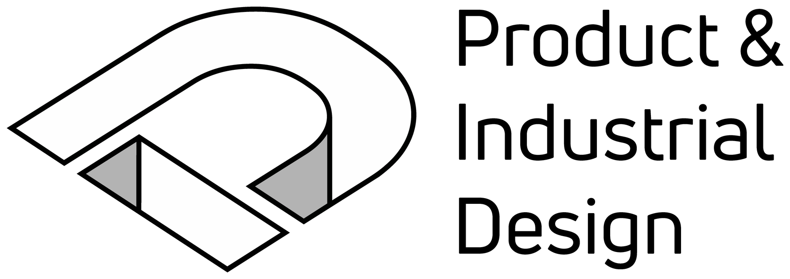

Workshop Tools Guide
How to check items out and in, how to use the barcode scanner, and how to find out who has what. For workshop staff.
Contents
- 1. Sign in
- 2. Types of item
- 3. The screen and the bar
- 4. Use the 2D scanner
- 5. Check out a tool
- 6. Take accessories
- 7. Take consumables
- 8. Check in a tool
- 9. Return accessories
- 10. Who has this tool?
- 11. Undo a mistake
- 12. Scan feedback and colours
- 13. Manager log
- 14. Students
- 15. If something goes wrong
1. Sign in
You need your staff PIN and the Workshop Tools app. Open it from the home-screen icon, or from the link you were given.
- At the top of the screen, slide the switch to Staff. The sign-in box opens with the cursor already in the PIN box.
- Type your PIN and press Enter, or tap Sign in.
- Your name appears at the top. The app signs you out after 10 minutes without use. Tap Sign out when you leave.
To return to the student screen, slide the switch back to Student.
After you sign in, the screen is empty. Nothing from an earlier session is shown, so a tool cannot be checked in by mistake.
2. Types of item
There are three kinds of item. The app treats each kind differently.
| Kind | Examples | How it is recorded | Comes back? |
|---|---|---|---|
| Tool | Hammers, saws, grinders | Scan its own QR label, such as TL-042. | Yes. Check it in when it is returned. |
| Accessory | Drill bits, allen keys, hole saws | Scan the family label (for example DB), then pick the item. One item at a time. | Yes. Each has a return date. Tick each item when it is returned. |
| Consumable | Sanding paper, welding rods | Scan the family label (for example SP), then pick the item and how many. | No. These are used up and paid for, so they have no return date. |
3. The screen and the bar
The screen runs top to bottom in this order: the Student box, then Scan a tool (the camera), then the Out to this student list, then To check out and To check in. A section that has nothing in it is hidden, so only what you need is on the screen.
The Out to this student list shows the items a student has out. It opens by itself when a student is confirmed and closes while you are checking items out, so the list you are working on stays in view. Tap its header to open or close it. Once there are more than four items, drag the slider on its right, or scroll, to see the rest.
On a wide screen, such as a laptop or desktop, the scanning area sits on the left and the lists sit on the right. The Check out or Check in button sits directly under the list it saves, so you do not have to look for it.
A bar appears only when there is something to save. It holds the one main button:
- If items are waiting to be checked out, the button says Check out with the number. A student must be confirmed first.
- If you have ticked items from a student's list, the button says Check in with that number.
- If only items to check in are waiting, the button says Check in with that number.
A green message appears only for a problem, or after a check out with an Undo button.
4. Use the 2D scanner
The handheld scanner reads the QR labels on tools and the family and student codes. It works like a keyboard. Each scan types the code into the box that has the cursor, then presses Enter for you.
- Student number box: when the app opens, and after you sign in. Scan the student card.
- Tool box (Or type a number or code): after a student is confirmed, and after each save. Scan tools here.
Scanning a session, step by step
- Scan the student card. The number goes in and is confirmed straight away. The cursor moves to the tool box.
- Scan each tool. Its name appears at once with Checking…, then the result. Keep scanning. Each scan adds one tool to the list.
- Scan a family code, such as DB, to open the picker for accessories or consumables. See Take accessories.
- Press Enter on an empty tool box to open the check-out summary. Choose Confirm or Cancel with the arrow keys, then press Enter. See Check out a tool.
Scanner setup
The lecturer sets the scanner up once, using the scanner's manual. It must be set to:
- USB keyboard mode, so it types into any box on the screen.
- Enter after each scan, so every scan is confirmed without pressing a key.
- American keyboard layout and capital letters, so codes such as WR-2.5 are typed correctly.
- Trigger mode: press the trigger for each scan.
Labels are QR codes at the moment. Code 128 barcodes may be added later. The scanner reads both.
5. Check out a tool
- Confirm the student. Scan the student card or tap Scan student QR. You can also type the student number. Press Enter, or tap Confirm.
- Scan each tool. Point the scanner or the camera at the tool's QR label. It appears under To check out. If a label is damaged, type its number (for example 42 for TL-042) and press Enter.
- Check the return date. The Return by pill appears when tools or accessories are in the list. It starts as today. Change it only if they are due back on another day.
- Check out. Press Enter on the empty tool box, or tap Check out in the bar. The summary opens.
- Confirm or cancel the summary (see the box below), then press Enter.
After a confirmed check out, the list clears straight away. A short message with an Undo button appears for about 10 seconds. See Undo a mistake.
6. Take accessories
Accessories have a family label, for example DB for drill bits. Scanning it opens the list of items in that family. Items are shown by name, so there is no code to read. Each accessory gets a return date when it is checked out.
- Confirm the student first.
- Scan the family label, for example DB. The picker opens with the first item in stock already selected. You can also type DB in the tool box and press Enter.
- Choose the item. Press ↓ or ↑ to move through the items, then press Enter. An accessory is added to the list at once, and the picker stays open.
- Take another by moving to the next item and pressing Enter again, or scan another label.
- Finish the picker. Press ↓ until Add to check out is highlighted, then press Enter. The picker closes and the cursor returns to the tool box.
- Check the return date and check out. Press Enter on the empty tool box. Check the Return by date on the summary, choose Confirm, and press Enter.
Keys in the picker
7. Take consumables
Consumables are used up, so there is nothing to bring back and no return date. The student pays for them.
- Confirm the student, then scan the family label, for example SP. Choose the item with ↓ or ↑, then press Enter.
- Set how many. The quantity box starts at 1. Type a number, or tap + or −. The total price updates as you do. Press Enter to log it.
- Add more or finish. Repeat for other items, or move to Add to check out and press Enter.
- Check out. Press Enter on the empty tool box. Read the summary, tell the student the Total to pay, choose Confirm, and press Enter.
Marking consumables as paid
Open the student's Consumables list. Unpaid items are at the top under To pay, with the amount owed. Paid items are listed below under Paid.
- One item: tap Pay beside it once the student has paid.
- Several items: tap each item you want to pay for, so it is ticked. The total of the ticked items stays at the top, and Pay with that amount is at the top right. Tap it to mark them all paid together.
8. Check in a tool
There are two ways to check a tool in. Use whichever is quicker.
Option A: scan the tool
- Scan the tool's QR label, or type its number in the tool box.
- It appears under To check in. Press Enter on the empty tool box, or tap Check in in the bar. Read the summary, choose Confirm, and press Enter.
Option B: from the student's list
- Confirm the student. The Out to this student list shows what they have out.
- Tap each tool that has come back. Its row is ticked. Tap it again to unselect it.
- Tap Check in in the bar at the bottom, read the summary, and tap Confirm.
9. Return accessories
- Confirm the student. Each accessory they have out has its own row, with its return date.
- Tick one row for each item that is coming back.
- Check in. Tap Check in in the bar at the bottom, read the summary, and tap Confirm.
10. Who has this tool?
This only looks up a tool. It does not change anything.
- Tap Who has this? above the scan box.
- Scan the tool's label, or type its number.
- A card shows who the tool is out to, their year, and the return date. An available tool says Not out to anyone.
- Tap Add to lists to go back to checking items out and in.
11. Undo a mistake
- After a check out, a message appears at the bottom with an Undo button. It stays for about 10 seconds.
- Tap Undo to reverse the check out. Tools checked out are checked back in.
12. Scan feedback and colours
Every scan gives a clear response, so you don't have to check the list to know it worked.
The item's row also flashes in the list. Android phones beep and vibrate. iPhones show the flash only.
Colour key
13. Manager log
The Log card at the bottom of the staff screen is for managers only. It is a read-only history of tools that were checked out and in, and of consumables paid for.
- Sign in with your PIN, then tap Show on the Log card.
- Type a student number to see only that student's history.
- Set the From date and To date to narrow the period.
14. Students
Students do not need a PIN. On the first screen they:
- Scan their student card, or type their student number.
- Their tools, accessories and return dates appear straight away. Overdue tools are dark red and listed first.
Students see only their own items. Tools and accessories show a return date. Consumables have no return date, and the student's Consumables not yet paid list shows what they still owe.
15. If something goes wrong
| What you see | What to do |
|---|---|
| A scan goes into the wrong box, or nothing happens | Click into the box you want (the student box or the tool box), then scan again. |
| The scanner types letters or numbers wrongly | Check the scanner is set to American keyboard layout and capitals, as in section 4. |
| The arrow keys do not move the highlight | Click once on the screen to make sure the page has focus, then try again. Hard-refresh the page if it still does nothing. |
| The camera won't start | Allow camera access when the phone asks. Check that no other app is using the camera. |
| The image is too small or blurry | On Android, drag the Zoom in slider. On iPhone, move the phone closer to the label, about 15 to 20 cm away. |
| "That QR code is not a storeroom tool" | The label may be damaged or from another item. Type the number instead. |
| "Tool is already out" | Someone has already checked it out. Use Who has this? to find out who. |
| "is currently unavailable due to repairs" | The tool is in repair and cannot be checked out. Tell the lecturer if it is needed. |
| "Only 3 of Drill bit 3 mm in stock" | There are not enough on the shelf. Choose a smaller number, or check the shelf and tell the lecturer if the count looks wrong. |
| "Choose a return date for …" | A tool or accessory needs a return date before it can be checked out. Pick the date on the summary, then confirm again. |
| "Confirm a student first" | Accessories and consumables are recorded against a student. Confirm the student, then scan the label again. |
| The family label does nothing | Check that it is the family code, for example DB. If it still does nothing, type the code in the tool box instead. |
| The Log card is not there, or says "Managers only" | The Log is for managers. Ask the lecturer to check that your name is marked as a manager. |
| "Session expired. Sign in again." | You were inactive for 10 minutes. Sign in again. Check your list, because it may be empty. |
| "Could not reach the storeroom server" | There is no signal or Wi-Fi. Wait a moment and try again. Nothing is saved until the server answers. |
| "Student number not found" | Check the number on the student card. Ask the lecturer to add the student if they are missing. |